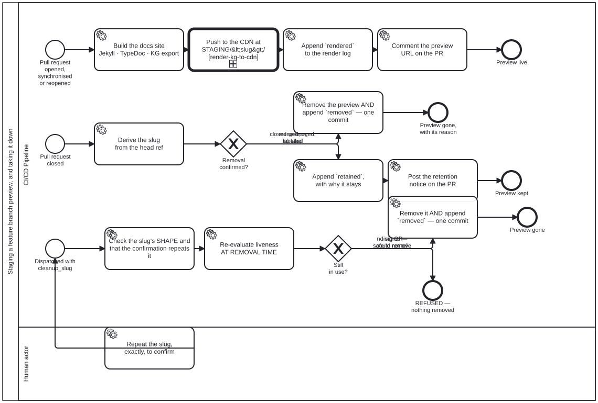

Generated from
cat-harness/skills/sdlc/sdlc-core/feature-staging.md— do not edit here.
Feature-branch staging
When to use this skill
When a content change is being reviewed and the reviewer (or the author) needs to see the rendered result before merging. The staging deployment puts the feature branch’s rendered site at:
https://<owner>.github.io/<repo>/STAGING/<branch-slug>/
A preview is the general publication step with a different root. The push
itself is render-kg-to-cdn with
STAGING/<branch-slug>/ as the publication root URL and the gh-pages Tool as
the target — the same step a release takes with the site root. What this skill
owns is everything around that call: the slug, the banner and staging.json,
the render log, the PR comment, and taking the preview down.
How it works
1. Feature branch → staging deployment
When an agent pushes to a feature branch, feature-staging.yml automatically:
- Builds the docs site (Jekyll + TypeDoc + BPMN diagrams)
- Writes the build’s facts — commit SHA, timestamp, branch, PR, issue, build
log — once, to
staging.jsonat the preview root - Injects a constant staging banner at the top of every HTML page, which reads those facts in the browser
- Comments on the PR that the preview is staged and queued, with the earliest push time and when it should be live
- Waits for the rate-limit window (§7), then deploys to
gh-pages/STAGING/<branch-slug>/ - Rewrites the same comment: pushed at a time, live by about five minutes later
2. The staging banner
Every staged page carries a muted-sage banner:
🔀 FEATURE BRANCH —
claude/update-schedule· commita1b2c3d· built 2026-09-18T00:30:00Z · PR #42 · issue #215 · compare with main ↗ · build log
This makes it impossible to mistake staged content for the published site.
Do not describe it as yellow. It was #d946ef, which measured 3.46:1
against its own white text and so FAILED the 4.5:1 WCAG AA threshold — the
banner was not merely glaring, it was the least readable element on every
staged page. #4F6F52 measures 5.63:1. Any replacement gets checked the same
way; the pale decorator sages (#9CAF88, #87A96B) all land near 2.5:1.
The facts are fetched, not baked — and that is a storage decision
cat-harness-tools/scripts/staging-banner.ts injects a fragment that is
byte-identical on every page and across every rebuild, and the browser
derives its preview root from location.pathname, fetches staging.json and
fills the banner in.
The banner used to be a bash string in feature-staging.yml with the SHA and
a date -u timestamp interpolated into all ~530 pages. Because the timestamp
changes every run, every page was unique even across two builds of one
branch: each re-push added ~27.5 MB of permanently new objects to
gh-pages, and the history grew even when the preview count did not. Measured
2026-09-19 (bean g196): 9 previews, 346.1 MB, and zero HTML blobs
shared between any two previews.
Three consequences for anyone editing this:
- Nothing per-build may go back into the fragment.
staging-banner-constant.test.tsruns two builds with different facts and compares the emitted bytes, so any leak fails regardless of how it is spelled. Add the fact tostaging.jsoninstead. - A failed fetch must still say PREVIEW. The static markup carries “FEATURE BRANCH” before any fetch happens, and the fetch only ever ADDS detail. “Could not determine” is never rendered as “this is the real site” — the same third-state rule the rest of the repository runs on, and here the failure mode is a reviewer approving the wrong artefact.
- Every value from the JSON goes in as
textContent, never as markup. Git ref names may contain<,>and"— they are not in git’s forbidden set, which stops at space,~,^,:,?,*,[,\and the control characters. The bash version interpolated the branch name into a string; the client builds nodes.staging-banner.e2e.tspins this with a branch name carrying anonerrorpayload.
Pages still differ between previews, because Jekyll’s relative_url
prepends the baseurl to ~235 hrefs per page and the fa-translation-index
island publishes site.baseurl to JavaScript. Those are coupled to the
language switcher and are g196’s remaining half — not fixed here.
3. Commit SHA stamping — and the four fields staging must NOT write
Both builds write docs/_data/build.yml, and they do not write the same
fields. The difference is not an oversight to tidy up; it is the second half
of the deduplication above, and restoring it undoes that work silently.
docs-site.yml (main) | feature-staging.yml (a preview) | |
|---|---|---|
sha, short_sha, built_at, run_url | written | DELIBERATELY ABSENT |
branch, staging, staging_slug, pr_number, search_index | — | written |
Why staging omits them. site-chrome/_includes/footer_custom.html renders
short_sha, built_at and run_url into the footer of every page. A
fresh date -u per run therefore changed every page on every deploy — the
same defect as the old bash banner, one include along, and it survived the
banner fix because it lives in a Jekyll include rather than in the
workflow’s injection step. Measured on two deploys of one branch three
minutes apart, both already shipping the constant banner: 613 files,
1466 insertions, 1465 deletions, one insertion and one deletion on every
HTML page.
The client fills those three in from the same staging.json the banner
already fetches — one request, two consumers — and a failed fetch leaves
Jekyll’s | default: 'dev' in place rather than blanking the footer, which is
the same third state §”The facts are fetched, not baked” requires of the
banner. On main there is one copy and nothing to deduplicate, so the include’s
own reason stands: “a stale browser cache and a deploy that has not run look
identical.”
Adding a per-build field back to the staging stamp will not fail a test. staging-banner-constant.test.ts compares the banner fragment, which is
genuinely constant; the footer is not in it. This is the paragraph that guards
the gap, and bean g196 records the session that shipped the banner fix, said
the pages no longer differed across rebuilds, and was proved wrong by reading
the deploy commits on gh-pages rather than the code.
A Jekyll layout can read site.data.build.sha to display the deployed
version — on main. Under a preview, read it from staging.json.
4. Before/after comparison
The reviewer opens both URLs side by side:
| Surface | URL | What it shows |
|---|---|---|
| Main (current) | <pages-url>/ | The published state on main |
| Staging (proposed) | <pages-url>/STAGING/<slug>/ | The feature branch’s changes |
The commit SHA on each page confirms exactly what is being compared.
5. Cleanup
When the PR is merged or closed, the cleanup job in feature-staging.yml
removes STAGING/<slug>/ from gh-pages so stale previews don’t accumulate.
The full retention rules — merged vs closed-unmerged, the label, the dispatch —
are in staging-review §”Staging retention”.
6. The cap — 3 GB of previews in total, the oldest rotated off
Owner ruling, 2026-10-02 (issue #1868): “cap the maximum number of
previews (<= 10) and rotate old ones off.” Amended 2026-10-04: by size, not
count, with a budget of 3 GB — previews had grown to 200–780 MB each, so ten
of them rotated off within an hour or two. Per-PR cleanup bounds nothing in
total, every preview is a full copy of the site, and gh-pages passed GitHub’s
10 GB Pages limit — freezing the live site on 2026-10-01.
So every stage run, inside its push loop, runs
cat-harness-tools/scripts/staging-rotate.ts: it stamps the preview it is staging
(STAGING/<slug>/.staged-at), keeps that one plus the most recently updated
others while the total fits MAX_PREVIEW_BYTES (3 GB, 3 x 1024^3 bytes, defined
there and nowhere else), and removes the rest, oldest first — each with a removed render-log entry, its record retired into
STAGING/_retired/, and a line (slug, age, size) in the commit message and
job log. _retired/ and non-preview entries are never touched.
Two things to know when editing it:
- The push loop re-reads
gh-pageson every attempt; it does not rebase. The commit carries removals decided against one read of the branch, and a replayed removal is a stale one — it could delete a preview another run has just refreshed. Same shape aspublish-gh-pages.sh. - A rotated-off preview is regenerated by the next push to its PR branch.
It can reach an OPEN PR’s preview; that is the ruling, and why the cost is a
404 until the author pushes rather than lost work. Detail and the reviewer’s
remedy:
staging-review§”The cap”.
7. The cone — a preview rebuilds only what a changed file can reach
Owner ruling, 2026-10-04 (bean 4j86): “staging rebuild only what is
dependency cone of changes (general rule)”, at FILE level, with each derived
directory’s generator declared as writer. A general rule across rendered
kinds, not a fact about IGs.
A rendered directory is in the cone when a changed file is
- under its own path (its pages, or its source data), or
- in the import closure of a
writerit declares, or under a writer directory (a path ending in/: what a generator reads, such as its templates, rather than imports), or - in a directory it is
derivedFrom, transitively (check:derived-from --downstream <instance/id>prints that half on its own).
cat-harness-tools/scripts/staging-cone.ts computes it; compose-docs.ts carriedInstances applies it to the composed instances. Three rules hold it
honest:
- Any doubt carries. No file list, a writer that does not exist, or an import that does not resolve carries the directory, with the reason in the build log. A preview missing the pages under review misleads a reviewer; an oversized one costs bytes. Those are not symmetric.
- A computed
import()is bounded, not ignored. It can load only a module, so it carries on a changed module file and never on a page. The two such sites a generator reaches today (harness-config.ts’scontributesloader andblock-module.ts’s block loader) have DECLARED targets and are walked exactly;DECLARED_COMPUTED_IMPORTSlists them. - The old instance-prefix match is a floor. The cone can only add to it. Narrowing below it is a separate decision, made once the cone has been measured in previews.
Measured on 2026-10-04: a skill-only change carries no IG; a change to
gen-ig-pages.ts or to smart-base/themes/chrome.json carries all three.
Before the cone, those last two changes dropped every IG from the preview that
existed to review them. staging-cone.test.ts holds all three as tests.
Built sites follow the same rule. An IG’s own Jekyll site and its AST
site are BUILT in the preview from an upstream repository pinned in the
instance’s own files, not composed from the checkout. stage-ig-sites.ts and
stage-ast-sites.ts take --changed-files and stage only the instances
siteInCone reaches. Its reasons, in order: no file list; a change to the
build environment (SITE_ENVIRONMENT: the docs Gemfile and this workflow); a
change under the instance; the cone reaching any of the instance’s
directories (a theme change arrives this way); or a change in the stager’s
closure. Each decision is printed with its reason.
When you add a generated directory, declare its writer and
derivedFrom. Without them the cone cannot reach it through code or data,
and the prefix floor is all it gets.
8. The rate limit — a preview never cancels the main site’s Pages build
Owner ruling, 2026-10-03 (issues #1868, #1956, bean j27s), option 1:
push staging previews to gh-pages less often. GitHub’s pages build and
deployment keeps only the NEWEST run, so every push cancels the build in
flight. A build takes about three minutes (2m20s–3m40s, measured 2026-10-03),
and in busy stretches previews were pushed every one to two minutes — ten
builds cancelled in a row between 07:50Z and 08:00Z that day, the main site’s
among them.
So before each push attempt the stage job re-reads gh-pages and runs
cat-harness-tools/scripts/staging-push-gate.ts gate, which holds the push until the
branch tip is old enough:
tip of gh-pages | wait until it is |
|---|---|
a staging commit (staging(...)) | STAGING_WINDOW_MS — 5 min |
anything else: the main-site publish, publish.yml, any other publisher | MAIN_WINDOW_MS — 10 min |
The numbers live once, in that script. Exit 75 means it slept until the
window should open (plus up to a minute of jitter) and the loop must re-read
and ask again; exit 1 means the job has waited MAX_WAIT_MS (two hours) and
fails rather than pushing; exit 2 is an unreadable tip, never read as open.
Three things to know when editing it:
- git’s fast-forward rule is the lock. Two jobs that both find the window open both build on the same tip; one push is rejected, re-reads, finds a tip younger than the window, and waits. So at most one staging push lands per window with no shared state. A rejection whose tip MOVED is therefore a lost race, sent back to the gate without spending one of the three attempts; only a rejection with the tip unmoved counts as a failure.
- No concurrency group, and none should be added. Every waiting preview
would pend in one group and each arrival would cancel the last — the
2026-09-19 measurement on the
stagejob. The per-branch group at the workflow level stays: a newer push to the same PR cancels a preview still waiting at the gate, so a superseded preview is never pushed at all. - A staging push BEFORE a main-site push is harmless; only one AFTER it
cancels the build that matters. The main push then cancels the staging
build, and the build that runs carries both. That is why the gate looks at
the tip, and why it does not wait for
docs-siteruns that have not pushed yet.
Why a rate limit rather than a batching “flush” job. A flush job — previews uploaded as artifacts, one scheduled job pushing every pending one in one commit — batches harder, but costs a second workflow, an artifact round trip of 200–500 MB per preview, a record of which artifact is already deployed, a schedule GitHub runs best-effort, and a write token over content built from a pull request. The gate is one script and one loop, and its correctness rests on git rather than on bookkeeping. The cost is latency under load: with K previews waiting, the last one pushes about 5 × K minutes later, and the PR comment says so with its own estimate.
The cleanup and cleanup-dispatch jobs do NOT pass through the gate yet.
They push once per closed PR rather than once per push, so they are far rarer;
gating them is the next step if cancellations by cleanup are ever measured.
Agent workflow
When an author requests a content change:
- Detect scope — use
content-graphandintegration-watcherto identify affected blocks and downstream implications - Create feature branch — branch from
main, open PR immediately - Make changes — edit content blocks, deterministic logic, translations
- Push — on a folio whose
staging.ymlruns on push, the staging deployment happens automatically. On an agent-run repository, runstage-local.ts(below). - Report staging URL — tell the author the preview is at
<pages-url>/STAGING/<slug>/ - Iterate — each push updates the staging deployment with a new SHA
The BPMN for this workflow is folio-assistant-core/processes/content/content-change-review.bpmn.
Publishing without a runner — stage-local.ts, one command (#2410)
When the Actions queue is backed up, the agent can build and publish itself: it already has the checkout, the platform and bun. Measured 2026-10-07 on smart-ra: the staging workflow waited 33 min for a runner to do 45 s of work, and GitHub’s Pages deploy then waited 47 min for about one.
On an agent-run repository (below) this is not a shortcut. It is the only publish path. It is one command for a preview and for the main site, for a folio and for a FHIR IG:
bun run cat-harness-tools/scripts/stage-local.ts --repo <repo> --plan # what it would do; nothing built
bun run cat-harness-tools/scripts/stage-local.ts --repo <repo> --dry-run # build, compose the commit, push nothing
bun run cat-harness-tools/scripts/stage-local.ts --repo <repo> # build and push
bun run cat-harness-tools/scripts/stage-local.ts --repo <repo> --artifact <dir>
It prints its plan first, every time: which workflow it mirrors, where the output lands, what it replaces and what it keeps, the commit message, and what it does not run.
Which publisher is read from the repository’s own workflow files, from the reusable workflow each one calls:
- a caller of
folio-staging.ymlis a folio. The build inputs (build_command,site_dir,publish_branch, …) are read from that caller. - a caller of a reusable workflow that a mounted layer declares as a site
publisher is that publisher’s kind. The IG layer declares one: a caller
of its
fhirbuild.ymlorghbuild.ymlis an IG, published by that layer’s own code, whichstage-local.tsreaches through the layer’s declaredsite-publisher-igpipeline slot and never by path. The reusable workflow is fetched at the ref the caller names, and its build job is run step by step as written:run:blocks with the environment a runner gives them,docker://steps in their image. Steps that read a secret, push to the source branch, or need an Actions runtime are skipped, and the plan names each one with its reason.fhirbuild.ymlitself only triggers build.fhir.org’s auto-build, so the Pages build is theghbuild.ymlbeside it, and the plan says so. - a repository that calls both (smart-ra carries an IG under
input/) gets the folio, unless--publisher igis given. The folio owns the publish root. An IG’s root deploy is a clean one, and it is refused on a publish branch that holds a folio’sSTAGING/,_render-log/or_main-site.json.
Main site or preview follows the branch, as the workflows do. The default
branch publishes the main site; any other branch publishes a preview.
--main says the same explicitly, and it is refused off the default branch.
The main site is published only from a HEAD that is the pushed tip of the
default branch.
| folio | IG | |
|---|---|---|
| preview | STAGING/<slug>/, replaced wholesale; held by the rate-limit gate (§8); commit staging(<slug>): from <sha>; render log staging-preview | branches/<last path component>/, nothing deleted; commit Deploy candidate branch |
| main site | the root, through publish-main-site.ts: only the files the last publish’s _main-site.json lists are replaced, and STAGING/, _render-log/ and anything a person put at the root are kept; commit main-site: from <sha>; render log main-site for / | the root, cleaned except for the deploy step’s clean-exclude (branches, sitepreview) and the action’s own exclusions; commit Deploy main branch |
Every path refuses an empty build before it deletes anything (bean oisv).
- Pushing removes the first wait and not the second. Pages deploys on a runner, so say the page is live once that deploy has run, never sooner.
--artifact <dir>: no GitHub at all. It writes the same build as a bundle for a claude.ai Artifact:index.htmlplus the files listed in<dir>/artifact.json. Publish that, and it is live in about a minute, private until shared.- An Artifact holds at most 254 files plus the page per publish. Whole
top-level directories are left out to fit, the ones with the most files
first.
artifact.jsonnames each one, and links into a left-out directory 404. - Before publishing a folio whose content belongs to a real organisation (a WHO draft, say), ask the author: an Artifact is a new place that content appears.
- An Artifact holds at most 254 files plus the page per publish. Whole
top-level directories are left out to fit, the ones with the most files
first.
- What it does not do, and says in its plan:
- the folio preview’s QA sweep, screenshots, review-comment ingestion and PR comment (the banner says the preview was built locally);
- the IG workflow’s PR comments, its branch-history page and README write-back (each reads a token, or writes the source branch);
- the IG deploy action’s
single-commit, which force-pushes one orphan commit and erases the publish branch’s history. This path commits on top and never force-pushes.
- An IG build needs what its workflow needs. The workflow runs IG
Publisher in a Docker image, so a machine with no Docker daemon gets the
plan from
--dry-run, and a real run stops naming the missing prerequisite. - An IG repository’s own site is built from its AST, not from the
Publisher’s HTML (owner, 2026-10-14). The repository declares
site.buildin itsindex.config.jsonentry (inline — never a<instance>.config.json, beanymvt), and that recipe’s first step restores the AST from its cache branch and refuses one that is not valid for the commit. The cache is refreshed by a Publisher run on a runner, through the IG layer’s reusable refresh workflow. It is the one workflow an agent-run IG repository dispatches, and only a person, or an agent the owner names for that run, dispatches it. The layer that owns IG builds owns the rule and the workflow; this skill names no IG step.
Agent-run repositories — the GitHub Actions path is documented, not run (owner, 2026-10-10)
A repository is agent-run when it says so in its own index.config.json:
"site": { "agentRun": true } (owner, 2026-10-14). An agent builds and
publishes its site, and its publish workflow keeps only workflow_dispatch.
The first repositories became agent-run on 2026-10-10 (bean n3h9). This
skill keeps no list of them: the declaration is the list, and
stage-local.ts says in every plan whether the repository declares it. For
these repositories the GitHub Actions path is
documentation. It says what the workflow does, so that the agent path can
match it. It is not a fallback for an agent to take.
| what | agent path | GitHub Actions path (documented, not run) |
|---|---|---|
a folio preview at STAGING/<slug>/ | stage-local.ts from the branch | folio-staging.yml job stage |
| a folio’s main site at the Pages root | stage-local.ts from the default branch | folio-staging.yml job publish-main |
an IG preview at branches/<branch>/ | stage-local.ts from the branch | the IG publisher’s ghbuild.yml, “Deploy candidate” |
| an IG’s main site at the Pages root | stage-local.ts from the default branch | the IG publisher’s ghbuild.yml, “Deploy main” |
| QA sweep, screenshots, review comments, PR comments | not run (the plan says so) | jobs in the workflows above |
Never dispatch the workflow, to cover a gap or for any other reason. On
2026-10-10 an agent dispatched an agent-run repository’s staging.yml on main to
republish the root after a re-pin. The site was published, but the run
contradicted the repository’s agent-run setting, and the owner asked “why
github action and not agentic?”. When the agent path cannot do a step, say
which step it is and ask. Do not reach for the workflow because it is there.
The owner’s ruling for now: skills that drive GitHub Actions are not to be
implemented. Document what the workflows do, here and in the workflow
files, so that an agent-run step can be checked against them —
stage-local.ts reads the workflow files rather than restating them, so a
change to a workflow’s build or layout is a change to the agent path too.
Staleness detection
The SHA stamp means staleness is always detectable:
- Staging matches PR head → the staging preview is current
- Staging SHA ≠ PR head → the staging preview is stale (push again)
- Main site SHA = merge commit → the publication is current
- Main site SHA ≠ latest main → docs-site.yml needs to run
SMART Guidelines example (from issue #215)
An author needs to change the immunization schedule:
- Agent detects the change affects:
- Narrative content in the immunization chapter
- Decision logic (CQL) for scheduling the next visit
- Indicators that count doses administered
- Referral logic for follow-up visits
- Agent creates
feature/update-immunization-schedule - Agent edits all affected blocks, assesses downstream impact
- Push → staging deployment → author reviews
- Author submits to the guidance review committee
- Committee compares
mainvsSTAGING/feature-update-immunization-schedule/ - Committee approves → merge → staging cleaned up → main site updated
Before you hand a staging URL to a person
Check the ref, then say how long and come back. A preview push is not a
served page, and the bot’s “Staging preview” comment reports at most the
first, not the second — and while it says queued, not even that. List
STAGING/<slug>/ on refs/heads/gh-pages before relaying the URL; quote the
comment’s own push and live-by times (the rate limit in §7 can hold a push for
several windows), or say the stage job takes ~2 minutes plus the wait and
Pages adds a few on top; schedule the re-check rather than promising it.
The reason it is a rule: an agent relayed one preview URL to the owner five times in a session without checking anything, each time straight off the bot’s comment. Whether the site served it was never established in either direction.
The three states, and why the third is not yours to assert, are in
staging-review §”Before you hand a staging URL to a
person (STRICT)”. It is the same rule and it is written once, there.
Before you report a staging URL as broken
Look at the publish ref, not the site. A staging URL is LOOKED UP in
gh-pages under STAGING/<branch-slug>/, never composed from the source
path — docs/<stub>/proposals/x.md publishes to /proposals/x.html, and
composing it from the source path yields a 404 for a page that is there. From
an agent container a curl against a Pages URL fails on the proxy regardless,
so a failed fetch is not evidence either way.
Full rule and the measured failure:
github-state-inspection.
Staging links
When a staging preview exists, every request this skill makes for feedback,
review or sign-off carries it: one deep link per changed page, to the anchor
where the change sits, with the same page on main as before. Where the skill
declares an output contract, they go in its stagingLinks field. The rule, and
where the page list comes from:
staging-review §”The deep-link rule”.
Processes that run this skill
This skill has its own process: Staging a feature branch preview, and taking it down.

| process | step(s) that name it |
|---|---|
| CRDM Phase 6 — implement, MVP, acceptance | Deploy the MVP to staging |
| Publishing the docs site, and keeping the previews alive | Restore the OPEN PRs’ staging previews |
| Staging a feature branch preview, and taking it down | Build the docs site Jekyll · TypeDoc · KG export; Derive the slug from the head ref |
| Adopting an upstream version bump | MVP: build the candidate on a staging branch |
| Questionnaire wireframe review | Stage the renderings |
| Content Change and Review | Create feature branch; Build staging site; Deploy to STAGING/ |
| L2 component edit and review | Render, stage, before/after [before-after-preview · feature-staging] |
| SMART Guideline end to end | 4 · Create / adapt L2 DAK assets; 6 · Produce L3 assets |